1. 一页概览
是什么：九安自助审核平台 v0.7.10 的原服务端跑在一台
EC2
上（测试台）。跑的是九安开发包的副本（.build/jiuan，开发包
+ 补丁 0001–0007，source/ 不动），用九安自己的运行时：MySQL
存储、平台存储、连接器、调用中间件、流水线运行器、Agent
任务服务；不接真汇联易和钉钉（汇联易是进程内的假的），单据是虚构的，存在实例本机的
MySQL 8.0 里。前面是我们的新前端 poc/web 和外壳
poc/app（口令登录、出网守卫、新前端用的接口）。AI 能力都在
Nexus 上：管理员在「Agent 接入」页启用 Agent、指定一个审批
Agent，单据池里的对公付款单自动出 AI
独立建议，人在单据抽屉里采纳或改判；知识库经 Nexus 上的 PG 知识库 Agent
读写。
2026-11-02 起只留这一套（新 UI）：原来并排的 v0.5.3 PoC（PoC
服务端，当时在 poc/app/、「Nexus Agent」页、知识
Agent、命令行 Skill agent-access、Agent 接入框架的契约
contract/）已从代码里拿掉，服务器上的也会删（第 2.2 节、第
6 节第 24 条）。机器类型以后用 m7g.xlarge（arm64）。

现在的状态（2026-11-02）：
| 项 | 状态 |
|---|---|
| 站点与新前端 | https://jiuan-v0710.tinyboat.blog（2026-11-02
起在 m7g 栈 andon- 上，见第 2.2
节）。首页 / 是新前端 poc/（React
19、TypeScript、Vite、Tailwind 4、TanStack Query、Radix，哈希路由；守着
CSP style-，不注入
<style>），有自己的登录页；旧的口令页
/ 照旧，跳到
/；九安原来的页面在
/。页面：工作台、单据池（只有对公付款单）和单据抽屉、知识库、我的规则、Agent
接入、设置（一期只链到 /
和 #platform）。说明见 PoC
说明 |
| 人工复核 | 在单据抽屉里「采纳 AI
建议」或「改判」，只记在测试台（/），不回写汇联易 |
| 审核 Agent | 「九安审核AI（PoC）」pub_
是「Agent 接入」页上的审批 Agent。线上是
jiuan-（发布修订号
18），思考强度 high（原来
xhigh），动态配置里工具 0 个（原来手工加的 15
个已清掉，要恢复只能在 Nexus 网页上重新加）。发布实际跑的模型是
global.；提示词元数据里写的是
${AGENT_（环境配置里是
opus-5-5），那只是元数据，两者对不上。一轮 7–20 秒，查库 1–2
次。每次改线上提示词留一个目录在
audit- |
| 时限 | 一轮 AI 独立建议 180 秒（补丁 0006，只改测试台副本的
review_；九安上游的契约还是 120
秒）；调用中间件给 nexus- 200 秒（补丁
0007），超时报 AI_；外壳给一轮的租约 420
秒 |
| 知识库 | PG 方式。测试台经 A2A 调 PG 知识库 Agent「知识库文档管家（PG
版）」pub_（kb.），它的调用密钥由项目负责人在「Agent
接入」页启用；这个 Agent 的代码在
knowledgebase-（2026-11-02
已从分支 feat/ 合进
main）。有效的规则是审批风险判断卡 risk-（449
条）；V4.0 审批矩阵 finance-
已下线（可恢复，没删）。向量 2026-10-30 晚起由另一个会话换成 Cohere
Embed v4。见第 2.2 节和 kb/GUIDE.md
7.6 |
| 部署 | 分三块：前端（poc/）、PG
与知识库后端（kb/，测试台上由
poc/ 驱动）、Nexus 上的 Agent
与发布（audit-、knowledgebase-、skills/）；测试阶段三样在一台机器上 |
| 账号 | 见第 2.4 节 |
| 测试 | run. 端到端：2026-11-01 完整运行 26 条，25
通过，那 1 条（知识库 Agent 回复前多一句话）已修；之后知识库的 4
条、单据池的 6 条单独重跑全部通过。2026-11-02 对 m7g 测试环境（经
SSH、Nexus 已指向它的 PG）完整运行 26 条全部通过（web 15、jiuan
11，带风险判断卡 .docx 的上传）。完整跑一次约 1–3 美元的 Nexus 调用 |
| v0.5.3 PoC | 2026-11-02 从代码里拿掉（变更记录）；旧栈上还在跑，删旧栈时一起没（第 2.2 节） |
| 代码托管 | 交接仓库 https://github.com/LiboMa/nexus-jiuan-agent-framework-poc-guide：只有交接内容（代码、Skill、交接文档），给客户用；由
docs/
从开发目录同步。开发仓库 https://github.com/LiboMa/nexus-jiuan-agent-framework-poc：另外还有设计稿、实现计划、进度看板、历次评估和评审记录。两个都是私有仓库。交接仓库的封板标签是
v0.（2026-10-19）、v0.（2026-10-21）和
v0.（2026-10-26，分支
release/，本版）；开发仓库停在
v0. |
| 未完成 | 第 6 节 |
页面的截图在交付包的
evidence/round7/e2e/（端到端测试截的，数据都是虚构的）。
一句话的交接要点：Markdown 文档是唯一的源；前端只用
poc/infra/deploy.sh 部署，知识库用
poc/infra/kb.sh，审核 Agent 的提示词只经
audit-agent/apply.py 下发；Agent 的调用密钥和 Nexus 的 API
密钥由管理员在新前端的「Agent
接入」页加载，加密存进九安的库，加、换、停用都不用部署或重启；测试台自己的启动配置（两条口令、三项测试台密钥）只在本机的
poc/infra/secrets.env，不进构件、不进文档、不贴进对话；九安开发包只读，服务端跑的是打过补丁的副本。
2. 资产清单

2.1 代码与目录
都在本机的
~/MyDev/LLM/Nexus-AI-strands/application-deploy/audit-nexus/
下。
| 路径 | 内容 | 谁维护 |
|---|---|---|
poc/ |
九安 v0.7.10 测试台的外壳（server.
组合根，front. 在 /
给新前端，口令登录、进程内假汇联易、出网守卫；「Agent
接入」页的后端：nexus-
发布列表、agent-
测试、agent-
调用记录、agent-
审批流路由；知识库页的后端：kb-
上传 / 历史 / 制度清单 / 下线 /
检索接口、kb- 把知识库页的数据存在
jiuan 库的
poc_、kb-
经 A2A 调知识库 Agent（kb.），2026-10-30
起测试台不直连 PG；新前端用的接口：reviews.
复核、dashboard.
工作台、advice- AI
轮次、evidence-
原件分页）。lib/：A2A 客户端、名片规整、operator
命令行、口令登录、HTTP 小工具（2026-11-02 从 poc/
搬来）。test/
单元测试，test/
端到端测试（run.、web.、api.） |
应用开发 |
poc/ |
新前端（React，哈希路由）：npm ci && npm test && npm run build；poc/
每次都先构建它，dist/ 随构件发出 |
应用开发 |
poc/ |
build-：从九安 v0.7.10
开发包按清单复制 → 按顺序打补丁 → 装上锁定版本的
mysql2，输出到
. |
应用开发 |
. |
生成物（九安副本 + 补丁 + 依赖）；deploy.
每次重建，不要手改 |
— |
patches/ |
打进九安 v0.7.10 副本的补丁 0001–0007，按文件名顺序：连 Nexus
列发布；「Agent
接入」页（手动添加、测试、调用记录）；启用即就绪、审批流只调管理员指定的一个审批
Agent；「规则库」分「审核要点」「制度知识库」两页（public/）；规则页跟着知识库方式走、「我的规则」；review_
的时限 180 秒；nexus- 的时限 200 秒 |
应用开发 |
audit- |
审核
Agent「九安审核AI」的提示词（v3：信封模式、review_、只读查知识库，第
1 次查询用 kb_）、下发脚本
apply.（写提示词并重存发布的动态配置）；prompt-：每次改线上提示词的改前、改后、比对、下发记录（回退用改前那份） |
Agent 开发 |
kb/ |
知识库部署工具（原
pgvector-，2026-10-26 并入）：PG +
pgvector 容器、库内语义检索 kb_、Nexus
数据连接器、规则入库、Agent 提示词受管规则、核对。测试台上用
poc/
驱动（从栈里取实例和网段）；完整说明在
kb/。kb/：把审批风险判断卡的
HTML 转成可入库的 .docx（只有代码，原页面和转出来的文件不进仓库） |
运维、Agent 开发 |
knowledgebase- |
PG 知识库 Agent「知识库文档管家（PG
版）」的源码：工具、提示词、打包与导入脚本、A2A 命令行
scripts/ |
Agent 开发 |
customer- |
它给客户环境部署用的成品（交付版本 1.0.1），原样从交付仓库
nexus- 收进来 |
Agent 开发 |
knowbase- |
S3 Vectors
版的文档管家（只有代码，没上线）；两个文档管家共用的管理员脚本在它的
scripts/ |
Agent 开发 |
poc/ |
CloudFormation
模板、deploy.、destroy.、backup.（升级前的根卷快照）、upgrade-（换实例类型）、migrate-（换机器时搬数据）、kb.、lib/（环境配置、经
SSH 管理）、bench/（实例上的 MySQL
安装、配置、重置脚本与 systemd
单元）、test/（部署脚本、模板、测试台脚本的测试）、env/（环境配置，只有
example.
进交付）、secrets.（只在本机，0600） |
运维 |
skills/ |
Nexus 一侧的 Skill（1.1.0，从 Nexus-AI
项目复制，不带任何密钥）：编码工具用它在 Nexus 上建
Agent、发布；deploy. 也从这里取
scripts/ 打进构件（「Agent 接入」页连
Nexus 用它） |
Agent 开发 |
docs/ |
交接文档：docs/
是交付文档，另有架构文档；docs/
生成
HTML。设计稿、实现计划、进度看板、历次评估和评审记录只在开发仓库 |
全员 |
evidence/ |
各轮的截图与测试证据；e2e/
是最近一次端到端测试的结果 |
— |
archive/ |
不再使用、只留作记录的旧证据、旧包、建 Agent
时的调用记录、测试台升级的执行记录（说明见
archive/）；不进交付包 |
— |
VERSION、CHANGELOG.、README.（根目录） |
版本号
Finance-、每个版本改了什么、包的入口说明 |
应用开发 |
source/ |
九安原开发包。只读，不改，不执行其中脚本；seeds/、database/
含真实数据，不打开、不复制 |
九安 |
2026-11-02 拿掉的（找它们的去看变更记录）：当时的
poc/app/（v0.5.3 PoC 服务端与它的测试）和
poc/bench/build-jiuan.sh（v0.5.3 的；现在叫这两个名字的是
v0.7.10 测试台的外壳和构建脚本，第 2.7
节）、poc/tools/、skills/agent-access/、knowledge-agent/、contract/（九安
v0.7.10 的 src/agent-contract/ 里有一份原样拷入的，见开发者快速对接指南）、docs/delivery/patches/；v0.5.3
的开发包 source/审核平台-测试环境开发包-v0.5.3/
也不再用到。
另外两处本机依赖：
- nexus-ai-operator：用仓库里的
skills/nexus-ai-operator/（1.1.0），deploy.sh只打包其中的scripts/nexus.py；要换版本用环境变量NEXUS_OPERATOR_SCRIPT； - 本机 operator 凭证
~/.nexus/：不读、不复制、不打印。
2.2 线上环境
AWS 账号 533267047935，区域
us-east-1。交接仓库和交付包里，本节和全文的 AWS 账号与 EC2
标识（实例、IP、VPC、子网、安全组、快照、卷、构件桶、CloudFront
分发、托管区、证书）都已换成 AWS 文档的示例值，比如账号
123456789012、实例 i-0123456789abcdef0。
两个栈（2026-11-02）：
| 栈 | 机器 | 站点 | 管理通道 | 现状 |
|---|---|---|---|---|
andon-（现在的测试台） |
i-，一台
m7g.xlarge（arm64），前端、MySQL、知识库的 PG 都在上面 |
jiuan-（2026-11-02
19:13–19:18（UTC+8）从旧栈迁过来；之前的临时站点
jiuan- 已经不用） |
不用 SSM，经 SSH（密钥对 key-）+
栈里的 EC2 Instance Connect 端点 |
2026-11-02 16:59（UTC+8）起 Nexus 的 PG 连接器和数据库凭证密钥指向它的 PG；v0.5.3 留下的数据已清（第 6 节第 22–24 条） |
andon-（旧栈，等删） |
i-，t3.large（x86），EIP
13. |
jiuan-（迁域名时改的名字）、andon-，都没人用 |
只走 SSM | 还是旧版本（v0.5.3 PoC 在前、按 Host 把 v0.7.10 转过去）；它上面的
PG 没删、不再有新写入。根卷快照
snap-（2026-11-02，删栈后留着）。构件桶
andon-，CloudFront
E92MPQ217VIPX |
域名迁移（2026-11-02 19:13–19:18（UTC+8），站点停了约 5
分钟）：先用 migrate-data.sh --skip-pg
从旧机器最后同步一次 jiuan07 库和状态目录（73
项逐表一致；当时还叫这个名字，第 2.7
节）；旧栈用它原来的模板（--use-previous-template）只把
Jiuan07DomainName 改成
jiuan-v0710-old.tinyboat.blog，腾出别名；m7g
栈的环境配置改成
JIUAN07_DOMAIN_NAME=jiuan-v0710.tinyboat.blog（现在叫
DOMAIN_NAME）再跑
deploy.sh。迁完只做了不改数据的检查：首页、登录、单据池 5
张、工作台、知识库 449
条就绪、/analysis.html。迁域名的那几分钟里查过 DNS
的机器，最多 15 分钟内（区的否定缓存 900 秒）可能只拿到 IPv6
地址、连不上；macOS 上 sudo killall -HUP mDNSResponder
清缓存。旧栈项目负责人定「先留几天再删」：删的时候
DEPLOY_ENV=poc/infra/env/beine1013.env bash poc/infra/destroy.sh。
一台实例上的样子（新代码部署之后；两个栈用同一个模板
poc/infra/andon-finance-poc.yaml）：
| 资源 | 值 |
|---|---|
| 服务 | systemd 服务 andon-（系统用户
jiuan，直接听
0.，屏蔽 IMDS），程序
/
+ 九安副本 current/ + 新前端
current/。没有 PoC 进程、没有按
Host 转发、没有 andon 用户；以前的
andon-
部署时停掉、删掉 |
| 网络 | 安全组只放 CloudFront 回源前缀列表 pl-
访问 4180；22 端口只在经 SSH 管理时对
SSH_ 或 Instance Connect 端点开 |
| CloudFront | 一个分发 Distribution，别名是栈参数
DomainName，回源 OriginDomainName 的
4180（明文 HTTP，第 6 节第 2 条）；栈输出
SiteUrl、DistributionId |
| MySQL | 实例上的 Docker 容器 jiuan-（mysql:8.0，只听
127.0.0.1:3306），数据目录
/，只有库
jiuan（账号
jiuan_，只能看这个库）。端到端测试前
bench/ 重建 jiuan
库，保留启用记录（含审批 Agent）和 Nexus 连接 |
| 知识库 | 同一台实例上的 Docker 容器
nexus-（pgvector/，只绑实例私网
IP 的 5432），库 nexus、表
approval_（制度原文不进仓库。2026-10-31
起有效的是审批风险判断卡 risk-，449 条；原来的
102 条 finance-
已下线，可恢复）；容器里装了 PL/Python，库内语义检索
kb_ 用实例角色调 Bedrock 生成向量（Cohere Embed
v4，1024 维；栈里的 KbBedrockPolicy
跟着换了），另有上传历史 kb_、检索日志
kb_。经 Nexus 的 PostgreSQL
数据连接器接到「九安审核AI」，Agent 只读查询；PG 知识库 Agent
的工具经数据库凭证密钥读写；PG
端口的入站规则归测试台的栈（KbAllowedCidr）。部署与核对：bash poc/，说明见
kb/；跑 db 阶段前确认
kb/ 的
EMBED_ 是 Cohere
v4（防混用检查，kb/
7.6）。上传、检索在新前端的「知识库」页（九安原来的「规则库 ›
制度知识库」页也行），都经 PG 知识库 Agent
pub_ |
| 构件桶 | 每个栈一个：releases/、releases/（保留
14 天）、secrets/（SSE）、搬数据时的
migration/（搬完就删） |
| 运维通道 | 经 SSM（Run Command、Session Manager）或经
SSH（poc/），按环境配置；实例角色禁止读
SSM 参数 |
| 实例上的目录 | /（当前版本）、/（上一次部署的版本，回滚用；启动时不再拉包，只有部署会换它）、/（root
0600）、/（MySQL
的 root 口令，root
0600）、/（外壳的配置
env 和密钥文件，root:jiuan
0640）、/（nexus/
是「Agent 接入」页连 Nexus 的凭证，custom-
我的规则，kb-
上传暂存，seed-
种子单据的时间锚点） |
2.3 Nexus
https://nxs-beine1013.tinyboat.blog，v0.3.28。（线上 Nexus AI 的实际地址：https://d3u3hj2us186y.cloudfront.net/）
| 对象 | 编号 | 用途 |
|---|---|---|
| 九安审核AI（PoC） | Agent agent_，发布
pub_ |
审批 Agent：单据池的 AI
独立建议（review_）都发给它；由管理员在「Agent
接入」页启用、「设为审批 Agent」 |
| 知识库文档管家（PG 版） | 发布 pub_ |
九安 v0.7.10
测试台读写知识库都经它（A2A，kb.：describe、ingest、list、detail、deactivate、restore、delete、check、search）；调用密钥在「Agent
接入」页启用，它就绪、不进审批流。代码在
knowledgebase-（2026-11-02
合进 main） |
| PG 数据连接器与数据库凭证密钥 | 连接器
pgvector-（conn-），密钥
key- |
两个 Agent 到 PG 的路（第 6 节第 23 条） |
| 九安知识Agent（PoC） | Agent agent_，发布
pub_ |
v0.5.3 PoC 用的；2026-11-02 起代码里不再用（提示词
knowledge- 已拿掉），Nexus 上的 Agent
和发布没动 |
这套 Nexus 用的是旧部署模板（/a2a 经前端反代，请求体上限
10 MB）。
2.4 账号
| 账号 | 在哪 | 说明 |
|---|---|---|
poc-「审核员（虚构）」、poc-「复核人（虚构）」 |
测试台站点 | 虚构账号，口令在
secrets.；端到端测试也用这两个账号。poc-
是管理员（admin），什么都看得到；poc-
是分析员（analyst），没有知识库、Agent 接入、设置。九安的
policy_
角色没有分到任何公司，它的单据池和工作台是空的。新接口都按「这个人的公司
∩ 测试台的公司」过滤 |
admin（editor） |
Nexus | 发布者账号 |
2.5 密钥清单
只写位置和用途，不写值。密钥分两类：Agent 和 Nexus
的密钥由管理员在新前端加载，不放进任何文件；测试台自己的启动配置放在
secrets.env。
Agent 和 Nexus 的密钥（管理员在「Agent 接入」页加载，不在
secrets.env 里）
| 名字 | 在哪 | 用途 | 怎么加、怎么换 |
|---|---|---|---|
| 「Agent 接入」页的 Nexus 连接 | 实例
/（operator
的凭证，命令行自己保存、续期） |
列出管理员在 Nexus 上开了 A2A 的发布 | 「连接 Nexus」对话框里贴自己的 API 密钥；「断开 Nexus」只删本机凭证；Nexus 上停用 API 密钥 |
| 启用的调用密钥 | 九安的库 jiuan（启用记录，九安的存储用
JIUAN_ 加密；页面上只显示指纹） |
审批流（只用审批 Agent 那把）、知识库页（知识库 Agent 那把）、测试 | 「启用」时只粘贴调用密钥，当场验证；「换钥匙」「停用」。不用改文件、不用部署、不用重启 |
operator 的 API 密钥 claude_ |
本机 ~/ |
本机 nexus-ai-operator 建 Agent、发布 | 一直用到过期；上生产前统一清理 |
v0.5.3 PoC 的那几样（各账号的 Nexus 连接和启用、旧的共享 CLI 连接
jiuan-audit-host，都在实例的
/var/lib/andon-finance/）随它拿掉：旧栈删掉时一起没；m7g
实例上搬来的那份按运维第 2.8 节清理。
测试台的启动配置（poc/infra/secrets.env）
样例：poc/infra/secrets.env.example，里面没有任何真实的值。
流向：本机 poc/infra/secrets.env（0600）→
deploy.sh 上传到构件桶
secrets/secrets.env（服务端加密）→ 经 SSM 或 SSH
在重启服务之前装到实例的
/etc/andon-finance/secrets.env（root 0600）→
bench/mysql-install.sh 和
bench/bench-configure.sh 把各项写成
/etc/andon-finance/bench/、/etc/andon-finance/jiuan/
下的文件 → 外壳和九安启动时读一次。
| 键 | 实例上在哪 | 谁读 | 怎么来 |
|---|---|---|---|
REVIEWER_、CHECKER_ |
/、checker_ |
外壳的口令登录（至少 12
个字符）；端到端测试（run. 读出来传成
E2E_、E2E_） |
自己定，或 deploy. 第一次运行时生成 |
BENCH_ |
/（root
0600） |
MySQL 容器（建库）、bench-（建
jiuan
库和账号）、bench-（重建库）、migrate- |
缺了自动补（openssl rand -），只补不换 |
JIUAN_ |
/ |
九安连库（账号 jiuan_，只能看
jiuan 库） |
同上（32 位十六进制），只补不换 |
JIUAN_ |
/ |
九安的存储：「Agent 接入」的启用记录（含调用密钥）等用它加密 | 缺了自动补（openssl rand -）。永远不要换：换了库里加密的那些就打不开 |
2026-11-02 之前的文件里还有
REGISTRY_KEY、BENCH_MYSQL_APP_PASSWORD、BENCH_DATA_KEY
三行，只有已经拿掉的 v0.5.3 PoC 用，留着不碍事，也可以删掉；更早的
NEXUS_API_KEY、NEXUS_A2A_KEY_…、E2E_…
几行也可以删。
操作：
- 新环境：最省事是不建这个文件，直接运行
poc/infra/deploy.sh，它会生成两条随机口令和三项测试台密钥。要自己定口令，就cp poc/infra/secrets.env.example poc/infra/secrets.env && chmod 600 poc/infra/secrets.env，填好两条口令，其余保持注释。 - 改口令：改本机文件，再
deploy.sh --code-only；服务重启后生效。 - 测试台的三项密钥：只补不换。实例上已有的只认原值，
secrets.env里的不一样时，部署在重启前就失败、服务照旧跑（运维第 2.6 节）。 - 交接：整个文件当面交接。丢了
JIUAN_DATA_KEY，九安库里的启用记录就解不开。换机器搬数据时两边要是同一份secrets.env（migrate-data.sh会核对）。
规则：
- 调用密钥只能由 Nexus 网页登录的本人签发，Operator 和 API
密钥签发都会被拒（Nexus 代码
api/v2/services/access_credential_service.py:283-286）。 - 开发测试阶段：给出的密钥一直用到过期，不主动吊销、不轮换。 Agent 用的调用密钥一律由管理员在「Agent 接入」页加载、从系统里读（页面上的启用记录），不另放。轮换与清理放到上生产前统一做（第 6.1 节）。
2.6 九安里的「Agent 接入」
2026-10-19 定的规则不变：九安里 Agent
的调用密钥从启用记录读，不另放密钥文件。九安 v0.7.10
自己已经有这一套（src/agent-enablement.mjs：管理员粘贴调用密钥，当场验证名片和
tasks/get，加密存进九安的存储，一个发布一把，Nexus 回 401
时标「密钥失效」）；测试台的补丁 0001–0003 在它上面加了：连一次 Nexus
列出发布、手动添加、测试与调用记录、启用即就绪、审批流只调管理员指定的一个审批
Agent。新前端的「Agent 接入」页和九安原来的「后台配置 › Agent
接入」页是同一份启用记录。细节见开发者快速对接指南。
2.7 名字去掉了「07」（2026-11-02）
目录、脚本、服务、实例上的用户、目录和库名、环境变量、栈模板的参数和资源都去掉了「07」：poc/web、poc/app、run.sh、andon-jiuan、用户
jiuan、/var/lib/jiuan、库 jiuan
和账号
jiuan_app、DOMAIN_NAME、Distribution……（对照表见变更记录）。要知道的：
- 两个标识保留原值：假汇联易的租户编号
fake-tenant-jiuan07、外壳连 Nexus 的 operator 配置名jiuan07。它们已经写进数据（库里的外键、「Agent 接入」的启用记录），改了要重建数据、管理员重新粘贴调用密钥，不值得。 - 旧名字的实例第一次部署新代码时原地改名（
bench-configure.sh，数据不动）；旧的secrets.env里JIUAN07_…两项由deploy.sh原地改名、值不变。 - 旧栈
andon-finance-poc上还是旧名字（它不再部署，等删）；migrate-data.sh现在只认库jiuan，不能再从旧栈搬数据。 - 改名前 m7g 的根卷快照
snap-0d6defa878e57b0b9。改名那次栈更新让实例停机再开，站点 21:17–21:45（UTC+8）不可用（变更记录）。
3. 文档索引（推荐阅读顺序）
- 本文。部署一整套照交付指南（三块的顺序、命令、验收、回滚）。
- 架构：测试台跑着的样子、每一块做什么、调用链、三块部署。
- 快速上手：给管理员，一步步在「Agent 接入」页接上 Nexus 上的 Agent。 开发者快速对接指南：给九安的开发，在 v0.7.10 上写、接一个 Agent；时限、知识库、提示词的教训。 Skills 配置指南：在编码工具里装好、连好 nexus-ai-operator。
- 部署与迭代规范：每类变更怎么改、怎么测、怎么发、怎么回滚。
- 运维与后续迭代：日常操作手册、故障排查、迭代的最佳方式。
- 客户部署路线：九安怎么部署三块、分阶段走到上线、要九安提供什么。
- 使用说明：PoC 说明、部署说明、审核 Agent 说明、知识库的 kb/README.md 与 kb/GUIDE.md、PG 知识库 Agent 的 README。
每份交付文档都有同名的 HTML 版本，由 docs/build-html.sh
从 Markdown 生成。
4. 职责划分
| 事项 | 负责 | 需要确认 |
|---|---|---|
| 外壳、新前端、补丁 | 应用开发 | 项目负责人确认端到端测试结果后才能发布 |
| Agent 提示词、发布 | Agent 开发（用 Operator Skill；审核 Agent 用
audit-） |
应用开发跑一次「Agent 接入」页的测试或 run. |
| 调用密钥签发（开发测试阶段用到过期，不主动吊销） | Nexus 账号本人（网页） | — |
| 「Agent 接入」页的启用、审批 Agent | 管理员（项目负责人） | — |
secrets.、部署、回滚、实例 |
运维 | 项目负责人 |
| 知识库（PG、连接器、规则入库） | 运维、Agent 开发（kb.） |
项目负责人 |
| 九安开发包升级 | 九安提供；应用开发重做补丁 | 端到端测试 |
| 线上端到端测试（会重建测试台的库、产生费用） | 应用开发 | 运行前通知在用的人 |
| 测试台的换型、停机、变更集、删栈、域名迁移 | 运维 | 每一步动手前项目负责人当场同意 |
固定规则（不会变）：
- 四步使用逻辑：开发者用 Operator 构建 Agent、发布、拿调用密钥 → 前端经 A2A 发现并加载测试 → 用 vibe coding 优化调用和界面 → 测试、上线。知识和 Agent 在一起（在 Nexus 上），前端只做调用。
- 提交前：端到端测试完成、项目负责人确认之后再推送，不是开发完测完就提交。
- 密钥：开发测试阶段，给出的密钥一直用到过期；Agent 的调用密钥从系统里读（页面上的启用记录），不另放、不主动吊销。
5. 接手第一周
6. 交接时的未完成事项
按紧急程度排列。第 1–12 条是 v0.5.3 PoC 时期记的，2026-11-02 起只适用于新 UI 的那部分还留着，其余标了「随 v0.5.3 PoC 拿掉」。
- 构件和健康检查还不带提交号（评审 C1
的后一半）：代码已经进了私有仓库，但
deploy.sh的归档包名和健康检查/poc/healthz里还没有提交号，线上跑的是哪个提交要靠时间对。见部署与迭代规范第 2 节。 - CloudFront 到源站是明文 HTTP（评审 C2）：登录口令、会话、管理员粘贴的密钥在这一段上没有加密。测试台只有虚构数据，开发测试阶段可以接受；上生产前必须改成 HTTPS。
部署脚本还剩一个缺口（评审 I2）：服务崩溃循环会覆盖实例上的：2026-11-02 起不再有：实例启动时不再从构件桶拉包，previousprevious只在部署时换（旧栈删掉之前，它上面还是旧的样子）。- 值班看不到问题（评审 I6）：健康检查只看服务是否就绪；调用密钥失效、Nexus 调用失败都不会让它变红。每天在单据池看一眼有没有新的 AI 建议（或模拟来单一张）。
- 上生产前要做的密钥事项（开发测试阶段不用动）：「Agent
接入」页连 Nexus 用的 API 密钥改成只读档位（评审 I4）；统一清理 operator
的 API 密钥
claude_code和secrets.env里不再用的几行。v0.5.3「我的 Nexus」用builder档位连接、旧的共享 CLI 连接jiuan-audit-host这两项随 v0.5.3 PoC 拿掉。 - 上生产前必须改的：见第 6.1 节。
初审 MVP（第二份计划：在 v0.5.3 上写九安补丁 0001–0006）：随 v0.5.3 PoC 拿掉。九安 v0.7.10 自己已经带了 Agent 接入的那一套（契约src/agent-contract/、A2A 适配层、Agent 任务服务、「Agent 接入」），测试台在它上面打补丁 0001–0007。审批记录还在内存里：随 v0.5.3 PoC 拿掉。v0.7.10 的单据、AI 建议的各轮和启用记录都在 MySQL 的jiuan库里。- 测试台的数据只在这一台实例上：MySQL、PG 和
/var/lib/jiuan都在根卷上，实例被替换前先跑poc/infra/backup.sh（根卷快照）；换机器用migrate-data.sh（运维第 2.5 节）。（v0.5.3 九安导航里缺「平台运行」分组的那半条随它拿掉。） 业务网关层以后再做（多轮会话、延后结果、分区与串联、租户级任务、按次配额）：随 Agent 接入框架的设计稿一起拿掉。- 测试台评审的 Minor：那 12 条大多是 v0.5.3
测试台的（它的
bench-reset.sh、run.sh、build-jiuan.sh、内存模式、种子单据），随它拿掉。还适用的两条：换型脚本只检查实例这一个资源；backup.sh默认第一块卷是根卷。 - 「九安审核AI」偶发返回不合法的 JSON（v0.5.3 时
2026-10-20 在请求里加输出规则处理过，那段代码随 v0.5.3 PoC
拿掉）：v0.7.10 里九安的 A2A
适配层按契约检查回答，不合格就在同一段对话里要求修正一次，还不行报
AI_INVALID_RESPONSE。
九安 v0.7.10 测试台的（2026-11-02 记）：
- （已解决，2026-11-02）分支
feat/pg-kb-steward已合进 main：PG 知识库 Agent（knowledgebase-writer-agent-pg/）、整库 Cohere Embed v4 的kb/（防混用、迁移、回退，kb/GUIDE.md7.6）和栈模板里的KbBedrockPolicy都在本仓库了。之前「只用--code-only、不跑知识库 db 阶段」的限制取消；跑 db 阶段前确认kb/deploy.env的EMBED_MODEL_ID是 Cohere v4（缺省就是）。 - 九安上游的
review_advice@1时限还是 120 秒：带知识库查询的真实审核一轮要 15–120 秒，测试台用补丁 0006、0007 放到 180 / 200 秒。建议九安在自己的契约里调高（开发者快速对接指南第 4 节、第 7 节）。 - 审核 Agent 的模型对不上：发布实际跑
global.anthropic.claude-sonnet-5，提示词元数据里是${AGENT_MODEL}（环境配置里是 opus-5-5），只是元数据。以哪个为准，等项目负责人定。 - 发布上手工加的 15
个工具已清掉（
s3vectors_*、http_request_tool等，在名为demo的配置里）：本仓库没有它们，要恢复只能在 Nexus 网页上重新加。注意audit-agent/apply.py在 pg 方式下每次下发都按CONFIG_TOOLS（现在是空的）重写工具清单：加回去以后，下次下发前先改CONFIG_TOOLS，否则又会被清掉。 kb/deploy.sh verify --e2e现在会失败（另一个会话在用它）：它要规则问答命中C03-1.2，而那份审批矩阵finance-approval-v4已下线。矩阵重新上线或改掉期望值之前，别把它当成故障。审批矩阵重新上线时，审核 Agent 提示词第 9 条 c ② 也要改（审核 Agent 说明「知识库（pg 方式）」）。工作台「最常引用的规则」只认：2026-11-02 已解决，风险判断卡的C…/G-…编号risk-cards-T…等条款编号也算，旁边显示依据里跟着的说明。出包的白名单里没有：2026-11-02 已补上（poc/web/copy poc/web，不带dist/）。- 项目负责人要在自己的浏览器上确认：「Agent 接入」页的密钥框上，Chrome 还会不会弹「保存密码」。
- S3 Vectors
方式的知识库只有代码，没上线：它的文档管家用的规则请求说明和 PG
版是同一段，回复前多一句话的问题它也会有；测试台的客户端两种方式都放过这种回复（
POC_KB_AGENT_REPLY_LEADIN）。 m7g 测试环境还没接正式域名：2026-11-02 19:13–19:18（UTC+8）已迁（第 2.2 节）。原来写的是：栈andon-finance-m7g，一台 m7g.xlarge（arm64）装前端、MySQL、知识库的 PG，经 SSH（key-malibo-sa）+ EC2 Instance Connect 端点管理（公司网络连不到它的弹性 IP 所在的184.192.0.0/12），临时站点jiuan-v0710-m7g.tinyboat.blog。数据 2026-11-02 从线上那台搬过来（migrate-data.sh，199 项逐表一致）。计划 2026-11-02 把jiuan-v0710.tinyboat.blog迁过来、再删旧栈：迁之前用migrate-data.sh --skip-pg从旧机器再同步一次jiuan库和状态目录（新机器上跑过的端到端测试会重置它的jiuan库）。- Nexus 已经指到新机器的 PG（2026-11-02
16:59，UTC+8）：数据库凭证密钥
key-a015b93ad361（名字还叫pgvector-10.0.1.38）和连接器pgvector-andon（conn-f0c7233959d9）的主机改成10.0.1.46，审核 Agent 和 PG 知识库 Agent 都跟着走，旧测试台也在用新 PG。旧实例上的 PG 没删、不再有新写入；要切回去：DEPLOY_ENV=poc/infra/env/beine1013.env bash poc/infra/kb.sh connector（先--dry-run）。删旧栈之后就切不回去了。 - 旧栈
andon-finance-poc还没删（2026-11-02 记）：域名已经迁走，项目负责人定「先留几天再删」；删之前的根卷快照是snap-05180f1a83a6edada。删的时候DEPLOY_ENV=poc/infra/env/beine1013.env bash poc/infra/destroy.sh（要输入栈名确认；删完第 23 条的「切回旧 PG」就没有了）。m7g 实例上 v0.5.3 留下的数据（MySQL 库jiuan_bench_test、jiuan_analysis和 v0.5.3 的账号jiuan_app（现在的jiuan_app是当晚由jiuan07_app改名来的）、/var/lib/andon-finance/、旧的配置和密钥文件、andon用户和组）2026-11-02 已经按运维第 2.8 节清掉。
下面三段是 v0.5.3 PoC 时期的记录，留作历史；里面提到的 v0.5.3 的
poc/app/、agent-access、bench-reset.sh、REGISTRY_KEY、内存存储等
2026-11-02 都已拿掉（现在的
poc/app/、bench-reset.sh 是 v0.7.10
测试台的，当晚去掉「07」后才叫这个名字）。
已经解决的（2026-10-20）：
- 工作流文档按应用现状更新：Agent
的调用密钥在前端加载，
secrets.env只放应用的启动配置；端到端测试只用审核员本人在前端的连接和启用；deploy.sh新建secrets.env时不再写调用密钥那一行。 - Agent 输出不合法 JSON（第 6 节第 12 条）：请求里加了输出规则，完整端到端测试 15 个全部通过。
- 交接仓库：https://github.com/LiboMa/nexus-jiuan-agent-framework-poc-guide，只有交接内容；AWS
账号与 EC2 标识已脱敏；有
secrets.env.example。
已经解决的（2026-10-19）：
- 测试台升级：升级前备份（根卷快照
snap-03051c671bc2738a0，实例上打包了账号目录）→ 停机换型到 t3.large → 先按内存存储部署、装好 MySQL → 在测试台上跑要 MySQL 的测试（11/11，4 次故意改坏代码都被抓住）→ 切到 MySQL → 端到端测试 15 通过、0 失败、1 按设计跳过。各账号的连接与启用都没变。记录在evidence/bench/2026-10-19-upgrade.md。 - 部署能看出安装失败（评审
I1）：
deploy.sh检查 SSM 的执行结果，不是Success就报失败。 - 测试台的最终评审（3 个
Important，每个都先写了会失败的测试再修；2026-10-19 已部署，SSM 结果
Success，健康检查
database: ok）：- 实例上已有的测试台密钥只认原值：
secrets.env被重新生成或改过时，部署在重启前就失败，服务照旧跑；BENCH_DATA_KEY格式不对也不写； - 健康检查真的去查库：库断了
/api/health回 503，database是unavailable； - 回到内存存储不碰 MySQL：MySQL 坏了也能用
POC_STORE=memory deploy.sh --code-only退回来。
- 实例上已有的测试台密钥只认原值：
- 端到端测试不再重启服务：开始前用
bench/bench-reset.sh重建测试台的库（重建失败才退回重启）。 - Agent 接入框架：设计稿 v2
与契约文件（
contract/），按通用框架设计，以后的财务、知识库等各类 Agent 都用同一套信封和任务目录。 - 应用自己的 Skill：
skills/agent-access/打包成可以安装的 Skill（SKILL.md、README.md、references/），有测试检查它和命令行脚本一致；两个 Skill 的配置写进 Skills 配置指南。 - 代码进 Git（评审 C1 的前一半）：交接仓库 https://github.com/LiboMa/nexus-jiuan-agent-framework-poc-guide（只有交接内容；标签
v0.1，2026-10-21 起v0.1.0），开发仓库 https://github.com/LiboMa/nexus-jiuan-agent-framework-poc（标签v0.1）。 - 整理：第 2–4 轮的原始接口返回、10-17 和 10-18
的旧包、建 Agent 时的调用记录、测试台升级的执行记录移进
archive/（不进交付包，引用它们的历史文档已改链接）。
已经解决的（2026-10-18）：
- 审批流的调用密钥：改为从系统里读：先用发起人在
Agent 页启用的那把，没有再用别的账号启用的，最后才用
secrets.env兜底（这个兜底 2026-10-20 起也不用了：调用密钥一律在前端加载）；Nexus 回 401 时只把用到的那一把标记失效。线上验证：secrets.env里那把 Nexus 已不认，审批流照样走通。 - 完整端到端测试：14 通过、0 失败、1 按设计跳过。
- 被端到端测试删掉的知识 Agent 启用：已由本人重新启用；测试也改成了只用、不动本人启用的项。
6.1 上生产前必须改的
来自 2026-10-17 的交付前代码评审（评审记录在开发仓库），编号沿用评审里的；2026-11-02 按新 UI 重新核对过：
| 编号 | 问题 | 现在 |
|---|---|---|
| C1 | 没有版本管理，也没有版本标识 | 代码已进 Git（交接仓库标签
v0.）；构件和健康检查还不带提交号 |
| C2 | CloudFront 到源站是明文 HTTP，走公网 | 没改 |
| I1 | deploy. 没部署成功也可能报成功 |
已修好（2026-10-19）；经 SSH 时任何一步失败也不做健康检查 |
| I2 | 每次服务启动都重新拉包，崩溃循环会毁掉回滚点 | 2026-11-02 起不再有：启动时不拉包，previous
只在部署时换 |
| I3 | 只给测试用的真凭证被装到了公网主机上 | 没改：整个 secrets.
还是一起传上去，两条口令测试也用 |
| I4 | 没有强制 Nexus 连接用只读档位；CLI 的凭证明文落盘 | 没改（「Agent 接入」页连 Nexus 的凭证在
/） |
| I5 | 调用测试的「审批建议」模式，会把单据事实发给用户启用的任何 Agent | v0.5.3 的调用测试已拿掉；v0.7.10「Agent 接入」页的单据测试也会把单据发给任何就绪的 Agent，只有管理员能用；要加发布白名单 |
| I6 | 值班看不到问题 | 没改 |
| I7 | 前端补丁的检查只看锚点和语法 | 随 v0.5.3 的前端扩展拿掉；新前端有自己的测试 |
| I8 | operator 脚本没钉版本，也没有合同测试 | 一半：仓库里固定为
skills/
1.1.0；合同测试没做 |
| I9 | 测试关卡不在生产的运行时上跑 | 没改 |
| I10 | 唯一的集成关卡是在唯一的线上环境跑端到端测试 | 没改 |
| I11 | 主机从不打补丁 | 没改 |
按这个顺序改：
- 版本（C1）；
- 传输加密（C2）；
- 去掉测试台脚手架：口令登录、假汇联易、种子单据；
- Nexus 连接强制只读档位、operator 凭证不明文落盘（I4）；
- 单据测试的发布白名单（I5）；
- 密钥：服务端和测试的分开（I3），静态加密用 KMS，清理第 2.5 节列的旧凭证；
- 可观测性（I6）；
- 流水线（I1、I8、I9、I10）；
- 主机（I11）。
九安自己部署时（客户部署路线），外壳和假汇联易不进九安，第 3 条自然没有；第 4–7 条按九安自己的环境做；第 1、2、8、9 条只关我们自己的测试台。
7. 交接确认
| 项 | 交出 | 接收 | 日期 |
|---|---|---|---|
| 代码与文档（第 2.1 节） | |||
| nexus-ai-operator（Skills 配置指南） | |||
| 测试台（第 2.2 节；MySQL、PG 与三项测试台密钥） | |||
| AWS 与 Nexus 权限（第 2.2、2.3 节） | |||
secrets.（当面交接） |
|||
| 未完成事项（第 6 节） | |||
| 端到端测试结果与截图 |